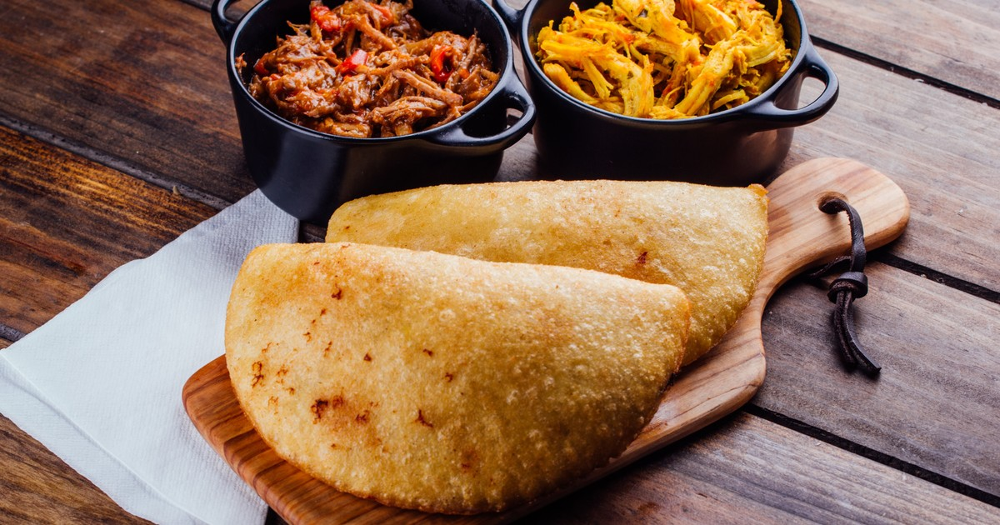

Empanadas Recipe

Venezuelan Empanadas
Venezuelan empanadas are a delicious turnovers made with a crispy cornmeal
or wheat flour dough, filled with various savory fillings such as beef, cheese,
chicken, or black beans. They are often deep-fried until golden brown and served
as a popular street food or appetizer in Venezuela.
Ingredients
- cornmeal or wheat flour
- Water
- salt
- vegetable oil (for the dough)
- filling (optional)
Steps
- In a bowl, mix cornmeal or wheat flour with water and salt to form a smooth dough.
- Let the dough rest for about 30 minutes.
- Meanwhile, prepare the filling by cooking ground beef, onions, peppers, garlic,
and spices in a skillet until browned.
- Roll out the dough into small circles or discs.
- Place a spoonful of the filling in the center of each dough circle.
- Fold the dough over the filling to form a half-moon shape and seal the edges by
pressing with a fork.
- In a deep pan, heat vegetable oil over medium heat.
- Fry the empanadas until golden brown on both sides, turning them gently.
- Remove the empanadas from the pan and place them on a paper towel to drain excess oil.
- Serve the empanadas hot and enjoy their deliciousness!